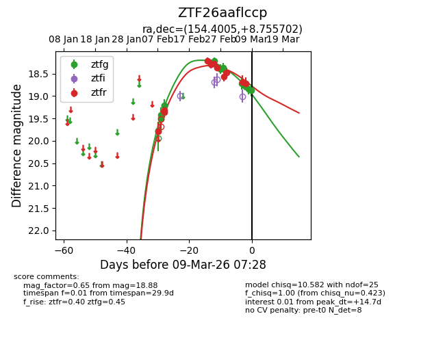
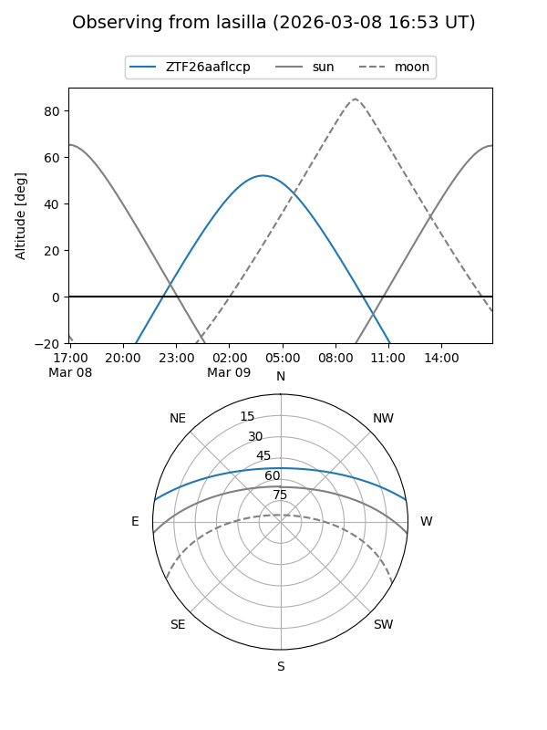
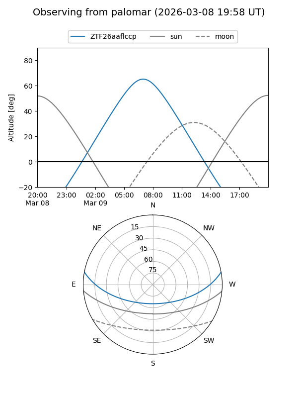
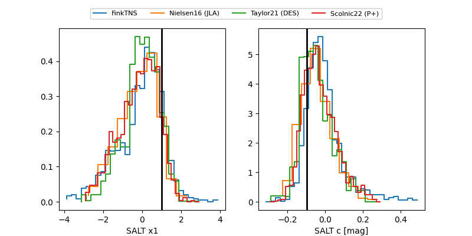

ZTF26aaflccp
Target ZTF26aaflccp at 2026-03-09 07:29
Aliases and brokers:
FINK: link
Lasair: link
ALeRCE: link
alt names
ZTF26aaflccp (ztf,fink_ztf)
Coordinates:
equatorial (ra, dec) = 154.4005,+8.75570
equatorial (HMS+DMS) = 10:17:36.11,+08:45:20.53
galactic (l, b) = (232.4107,+49.30554)
Flags:
Photometry:
last ztfg=18.88, ztfr=18.71
12 ztfg, 11 ztfr detections
Lightcurve

Visibility


Additional plots
